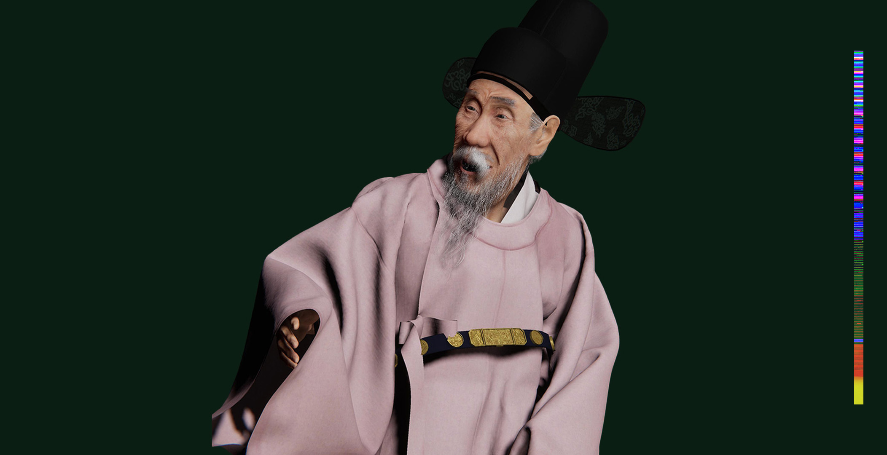

Art systems that stay
controllable in real time.
Technical Artist bridging art and engineering across Unity and Unreal Engine, with hands-on work in shaders, materials, textures, asset preparation, runtime systems, rendering debugging, and scalable real-time content workflows.
My strongest evidence is in HLSL/C# graphics systems, Maya-to-engine pipelines, multi-character scene scalability, material/lookdev troubleshooting, RenderDoc frame capture for Unity graphics debugging, and production support across artists, animation, rendering, and interactive delivery.
Rendering systems, scalable content, material workflows, and production troubleshooting.
Selected cases are ordered around the parts of the Side role I can demonstrate directly: custom real-time graphics systems, asset/material troubleshooting, scene scalability, engine integration, and cross-disciplinary production support. I do not claim shipped AAA open-world LOD/HLOD or asset-streaming ownership.
 01 / FLAGSHIP · REAL-TIME GRAPHICS R&D
01 / FLAGSHIP · REAL-TIME GRAPHICS R&D
Confidential Real-Time Game
Custom HLSL and C# systems spanning Perlin-driven vertex deformation, Fresnel surface response, raymarched metaballs, collision/proximity-driven runtime data, and deterministic Maya blendshape states integrated into Unity.
 02 / ENGINE / ASSET TROUBLESHOOTING
02 / ENGINE / ASSET TROUBLESHOOTING
Digital Human Shininho + Jooan
Maya source cleanup, topology/UV continuity, Unity prototyping, MetaHuman reconstruction, material/eye/hair troubleshooting, animation repair, Unreal Sequencer assembly, Niagara effects, and VR review.

03 / MATERIAL / TEXTURE / REAL-TIME ASSETGang Se-hwang Digital Human
Custom production character with Maya UVs, texture/material lookdev, XGen-to-card hair, Marvelous/Alembic cloth, Unity HDRP skin/eye/hair response, Python-assisted facial data, and C# runtime presentation.
Scene scalability, cross-DCC delivery, and reusable asset states.

Row, Row, Row Your Boat
Ten-character MetaHuman production: standardized identities, per-character materials/grooms, head/body setup repair, animation cleanup, front/side scene variants, and morning/sunset/night render delivery.
When It Seen
Three-performer body/face integration in Unreal with full-character Alembic export for downstream Houdini cloth-contact simulation — a production handoff across animation, engine, and FX.

Yaloo Digital Human
Shared character geometry with CC4/MetaHuman integration and material/texture-driven age variants — reusable visual states instead of duplicating independent character builds.
I work where rendering, content, and production constraints meet.
My strongest technical-art work translates visual goals into controllable engine behavior, debugs content failures across DCC and runtime stages, and builds workflows that stay repeatable as scene complexity grows.
Real-Time Rendering & Shaders
Custom HLSL, material response, raymarching, Perlin deformation, Unity HDRP/URP, Unreal real-time rendering, Niagara/VFX, and graphics troubleshooting.
Unity · Unreal · HLSL · Materials · TexturesAsset / Material Pipeline
Maya/Blender/Houdini asset preparation, UVs, texture/material lookdev, hair cards, Alembic, MetaHuman/character systems, and production fixes across DCC-to-engine handoffs.
Maya · Blender · Houdini · FBX · AlembicRuntime Systems & Debugging
C# runtime behavior, Python workflow support, RenderDoc frame capture for Unity graphics debugging, reusable visual states, animation/scene repair, and C++ working knowledge.
C# · Python · RenderDoc · Git · C++ (working knowledge)Profile → isolate → simplify / repair → validate in engine.
The work shown here is organized around production debugging: identify the visual or runtime failure, choose the lowest-risk intervention, implement it across DCC / engine boundaries, and verify the result in the actual presentation context.
Profile / Observe
Capture the actual failure state: rendering artifact, unstable content, animation breakage, or runtime behavior.
Isolate
Separate asset, material, shader, animation, and control logic so the bottleneck can be reasoned about.
Repair / Simplify
Change topology, materials, shader parameters, data flow, animation, or asset representation while preserving the art target.
Validate
Review in Unity / Unreal, compare variants, test the presentation context, and keep the workflow reproducible.
I am a real-time Technical Artist with a character-heavy background, but the recurring work is broader: materials, textures, shaders, DCC-to-engine asset preparation, runtime controls, debugging, rendering quality, and helping creative content survive technical constraints. I have used RenderDoc for Unity frame capture / graphics debugging and am strongest in C#, HLSL, Python, Unity, Unreal, and Maya; C++ is currently working knowledge rather than my primary production language.
Additional work in film, installation, and media art.